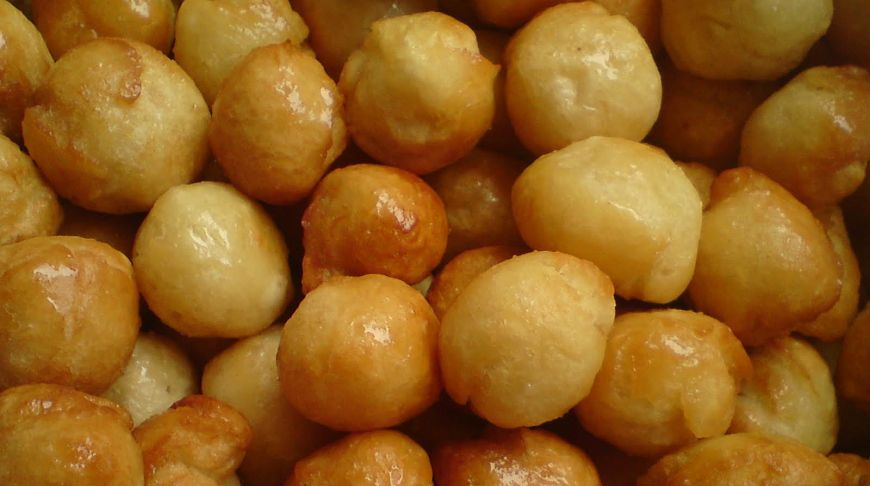

Тағамдар
Кесте
Мәлімет



Бұл біздің ұлттық тағам. Ең жаңа етпен дайындалған, дәстүрлі түрде оңтүстікте бұл тағамға қамырдың жалпақ жұқа табақтары болып табылатын ең нәзік жұқа кеспе беріледі. Қызылорда облысында сіз жіңішке кеспенің орнына күріш қосылған тағамның ерекше және ерекше түріне кезігесіз.

Бауырсақ - жоғары немесе бірінші сортты бидай ұнынан пісірілетін тағам. Бауырсақтың түрлері көп. Оны ашытып та, ашытпай да, көлемін әр түрлі етіп пісіре береді және әр аспаздың өз құпиясы бар.Ал қазақ халқында иленіп пісіру жағы ұқсас болғанымен пішіні мен үлкендігіне байланысты бауырсақтың бірнеше атауы бар

Екі жақтағы қабырғалар сүбессімен алынып, бір-бір қабырғадан қосып "шылбырлап" тілінеді. Жылқының семіздігі қазы майының қалыңдығымен өлшенеді.: Шынтақ, бір елі екі елі, ең семізі - табан, ішекке сыймағандықтан, тілген күйінде сақталатыны "дөңбес қазы" деп аталады.
| Атауы | Бағасы | Жасалу жолы |
|---|---|---|
| Бешбармақ | 5000 тг | Етті жуып-шайып тазалап, қазанға салады да, ет батып тұратындай етіп суық су құяды. Содан кейін қазанды қатты жанған отқа қойып, сарқылдатып қайнатады, бетіне шыққан қанды көбігін алып тастап, шамалап тұз, 1 бас пияз салып отын басады да, 1-1,5 сағат ет әбден піскенше шымырлатып қайнатады. Ет әбден піскен соң табаққа сорпасынан бөлек қотарып алып, тартылған табақтың санына қарай мөлшерлеп тұздық әзірлейді. Ол үшін сорпаға қара бұрыш, дөңгелектеп тұралған пияз салып, ыдыстың бетін жауып бұқтырып қояды. Ет туралып болған соң тұздықты еттің үстіне құяды және сақинаға туралған кеспе үшін: 2 жұмыртқа 3/4 - 1 стакан су 1/2 шай қасық тұз қарапайым ұн - шамамен 600 грамм |
| Бауырсақ | 500 тг | Бауырсақ-4-5 стақан бидай ұны, 1стақан сүт (немесе су), 1 шай қасық тұз, 2 ас қасық сары май, 2 жұмыртқа керек. Ашытқан қамырдан бауырсақ пісіру үшін жылы суға ашытқы, қант, ұн салып жылы жерге қою керек. Ашықты көпіршектеніп ашыған кезде тұз, май, жұмыртқа, ұн салып өте жұмсақ етіп иін қандыра илейді. Жұмсақ иленген бауырсақ жақсы қабарып, жұмсақ болып піседі. 4-5 стақан бидай ұны, бір ас қасық ашытқы, 2 ас қасық қант, 1 шай қасық тұз, 1 стақан сұйық май, 1 стақан сүт (немесе су), 2 жұмыртқа. |
| Қазы | 2500 тг | Қарта – жылқы етінің ең кәделі мүшелерінің бірі. Жылқы сойғанда ең алдымен қартаны ішіндегісінен босатып, айналдырады да, салқын суға жуып тазалайды. Қартаны дәміне келтіру үшін тұздайды, бұрыш сеуіп, пияз турап қосады. Бұдан соң ыстап сүрлеуге арналған қартаны бойына тұзын сіңіріп, салқын жерге (1-2 градус) 1-2 күн қояды. Қартаны 12-18 сағат бойы түтінге ыстайды. Содан кейін 12-15 градус температурада 2-3 күн сақтап кептіреді. Қартаны пісіру үшін салқын суға жуып, қазандағы жылы суға салып, отты баяулатып әбден піскенше 1,5-2 сағат қайнатады. Қартаны асқан етке қосып береді. |